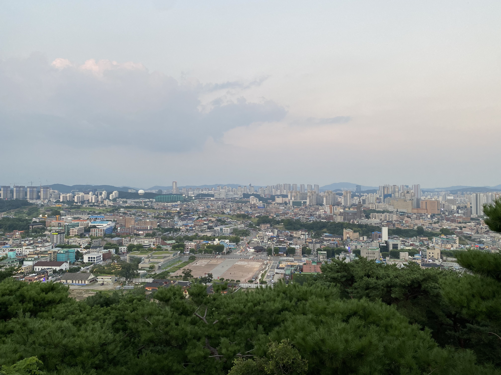

<Pattern>은 수원시 행궁동이 갖고 있는 장소로서의 패턴을 연구함으로써, 공간에 머무르고 출발하는 과정의 경험을 해석한 프로젝트 입니다.
행궁동에서는 자연스럽게 가족, 친구, 연인과 함께 성벽을 걷고 용연에 머무릅니다. 2019년 우연히 관찰하기 시작한 행궁동은 장소로부터 공동체의식이 공유되는 곳이었기에, 그 장소를 반복해서 걸으며 변화하는 삶을 받아들일 힘을 얻기도 했습니다.
본 프로젝트에서는 수원천에서 출발하여 행궁동 일대에서 무언가를 발견하기 위해서 걷는 사람들의 시선과 언어를 관찰하고 공유합니다.
- Site-Pattern1:
22.09.14 - 22.09.19 리버헤드(@riverhead.coffee) PM12 - 9
- Site-Pattern2:
22.09.16 - 22.09.19 카페초안(@cafe_choan) PM12 - 9
전시공간을 제공해주신 리버헤드와 카페초안에 다시 한번 감사드립니다.
본 프로젝트는 수원시와 수원문화재단의 후원으로 진행됩니다.


